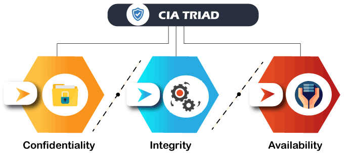

SVREC Technologies
SVREC TechnologiesCyber-Security
Cybersecurity is the protection of Internet-connected systems, including hardware, software, and data from cyber attackers. It is primarily about people, processes, and technologies working together to encompass the full range of threat reduction, vulnerability reduction, deterrence, international engagement, and recovery policies and activities, including computer network operations, information assurance, law enforcement, etc.
It is the body of technologies, processes, and practices designed to protect networks, devices, programs, and data from attack, theft, damage, modification, or unauthorized access. Therefore, it may also be referred to as information technology security.
Cyber-attack is now an international concern. It has given many concerns that could endanger the global economy. As the volume of cyber-attacks grows, companies and organizations, especially those that deal with information related to national security, health, or financial records, need to take steps to protect their sensitive business and personal information.
This Cyber Security tutorial provides basic and advanced concepts of Cyber Security technology. It will cover the most popular concept of Cyber Security, such as what is Cyber Security, Cyber Security goals, types of cyber-attacks, types of cyber attackers, policies, digital signature, Cyber Security tools, security risk analysis, challenges, etc.
Prerequisites
It is a basic tutorial where we can quickly understand the topics discussed if we have a basic understanding of how a firm or organization handles computer security. It is also helpful for us to have some prior experience with computer updates, firewalls, antiviruses, and other security measures.
Audience
Our Cyber Security tutorial is designed to help beginners and professionals.
Problems
We assure you that you will not find any problem with this tutorial. However, if you find any, you can post it on the contact form.
What is Cyber Security?
The technique of protecting internet-connected systems such as computers, servers, mobile devices, electronic systems, networks, and data from malicious attacks is known as cybersecurity. We can divide cybersecurity into two parts one is cyber, and the other is security. Cyber refers to the technology that includes systems, networks, programs, and data. And security is concerned with the protection of systems, networks, applications, and information. In some cases, it is also called electronic information security or information technology security.
Some other definitions of cybersecurity are:
"Cyber Security is the body of technologies, processes, and practices designed to protect networks, devices, programs, and data from attack, theft, damage, modification or unauthorized access."
"Cyber Security is the set of principles and practices designed to protect our computing resources and online information against threats."
Importance of Cyber Security
Today we live in a digital era where all aspects of our lives depend on the network, computer and other electronic devices, and software applications. All critical infrastructure such as the banking system, healthcare, financial institutions, governments, and manufacturing industries use devices connected to the Internet as a core part of their operations. Some of their information, such as intellectual property, financial data, and personal data, can be sensitive for unauthorized access or exposure that could have negative consequences. This information gives intruders and threat actors to infiltrate them for financial gain, extortion, political or social motives, or just vandalism.
Cyber-attack is now an international concern that hacks the system, and other security attacks could endanger the global economy. Therefore, it is essential to have an excellent cybersecurity strategy to protect sensitive information from high-profile security breaches. Furthermore, as the volume of cyber-attacks grows, companies and organizations, especially those that deal with information related to national security, health, or financial records, need to use strong cybersecurity measures and processes to protect their sensitive business and personal information.
Cyber Security Goals
Cyber Security's main objective is to ensure data protection. The security community provides a triangle of three related principles to protect the data from cyber-attacks. This principle is called the CIA triad. The CIA model is designed to guide policies for an organization's information security infrastructure. When any security breaches are found, one or more of these principles has been violated. We can break the CIA model into three parts: Confidentiality, Integrity, and Availability. It is actually a security model that helps people to think about various parts of IT security. Let us discuss each part in detail.
Confidentiality
Confidentiality is equivalent to privacy that avoids unauthorized access of information. It involves ensuring the data is accessible by those who are allowed to use it and blocking access to others. It prevents essential information from reaching the wrong people. Data encryption is an excellent example of ensuring confidentiality.
Integrity
This principle ensures that the data is authentic, accurate, and safeguarded from unauthorized modification by threat actors or accidental user modification. If any modifications occur, certain measures should be taken to protect the sensitive data from corruption or loss and speedily recover from such an event. In addition, it indicates to make the source of information genuine.
Availability
This principle makes the information to be available and useful for its authorized people always. It ensures that these accesses are not hindered by system malfunction or cyber-attacks.